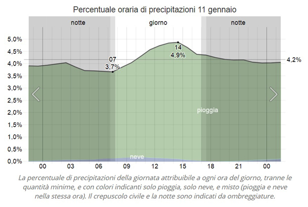
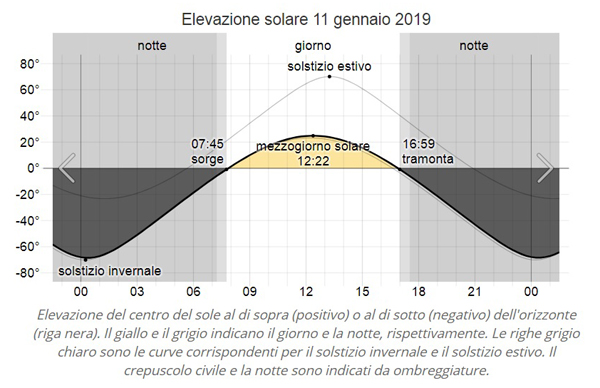

NUVOLOSITA'
11 gennaio: la percentuale media coperta dalle nuvole a Siena varia durante il giorno.
L'ora più nuvolosa del giorno è attorno alle 05:30, quando la probabilità di condizioni coperte o prevalentemente nuvolose è 61%.
L'ora del giorno più soleggiata è attorno alle 18:30, quando la probabilità di condizioni soleggiate, prevalentemente soleggiate, o parzialmente nuvolose è 52%.
Per riferimento, il 21 gennaio, il giorno più nuvoloso dell'anno, la probabilità di condizioni coperte o prevalentemente nuvolose è 55%, mentre il 21 luglio, il giorno più soleggiato dell'anno, la probabilità di cieli soleggiati, prevalentemente soleggiati, o parzialmente nuvolosi è 84%.
PRECIPITAZIONI.
11 gennaio, a Siena: in media 19% di probabilità che più di 1,00 millimetri di precipitazioni in totale cadranno durante la giornata, e si prevede che 97% saranno solo pioggia, 1% solo neve e 2% un misto di neve e pioggia.
Per riferimento, 16 novembre: massima probabilità di precipitazioni giornaliere(31%). 4 agosto: minima probabilità (10%).
11 gennaio: per gli anni con precipitazioni (19%), la tabella qui di seguito mostra quando durante la giornata le precipitazioni sono più o meno probabili, ad eccezione di accumuli di meno di 0,25 millimetri. Se le precipitazioni erano ugualmente probabili durante la giornata, tutte le ore indicherebbero 4,2% (100% diviso per 24 ore).
Le precipitazioni sono più probabili fra le ore 14 e 15, e meno probabili fra le ore 07 e 08.

SOLEGGIAMENTO.
venerdì 11 gennaio 2019: a Siena il sole sorge alle ore 07:45 e tramonta 9 ore e 13 minuti dopo, alle ore 16:59 Il mezzogiorno solare è alle ore 12:22.
Per riferimento, il 21 giugno, il giorno più lungo dell'anno, il sole sorge alle ore 05:34 e tramonta dopo 15 ore e 24 minuti, alle ore 20:58, mentre il 22 dicembre, il giorno più corto dell'anno, sorge alle ore 07:44 e tramonta dopo 8 ore e 58 minuti, alle 16:42.
Crepuscolo civile, il periodo prima del sorgere del sole o dopo il tramonto del sole, durante il quale è possibile praticare quasi tutte le attività all'aperto senza luce artificiale, inizia e finisce 32 minuti prima dell'alba e dopo il tramonto, alle ore 07:13 e 17:31 rispettivamente.

Midpines, California, Stati Uniti a 9.778 chilometri di distanza è il luogo lontano con temperature più simili a quelle che normalmente si registrano a Siena.

 ACCADDE OGGI
ACCADDE OGGI